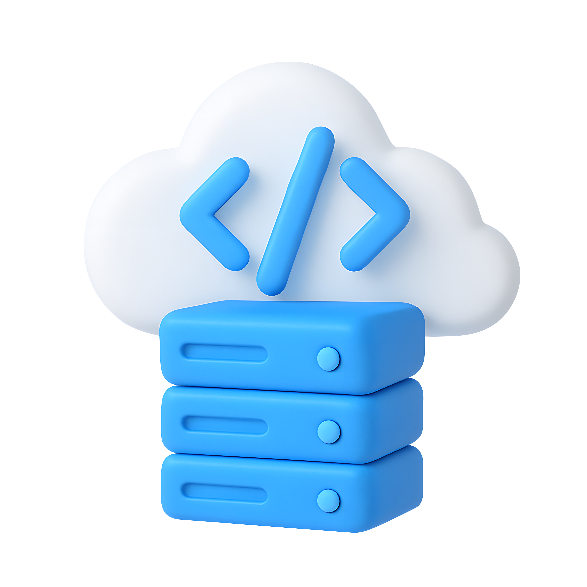

اینجا سوپرمارکت بوی کد است. بهزودی باز میشود.
این اسم یعنی چه؟
Code Smell اصطلاحی از کنت بک است که در کتاب Refactoring مارتین فاولر معروف شد. بوی کد باگ نیست، نشانه است: تابع خیلی بلند، کد تکراری، کلاسی که همهکاره است. مثل بوی بد در آشپزخانه، میگوید یک جای کار ایراد دارد.

red apple
fresh from damavand